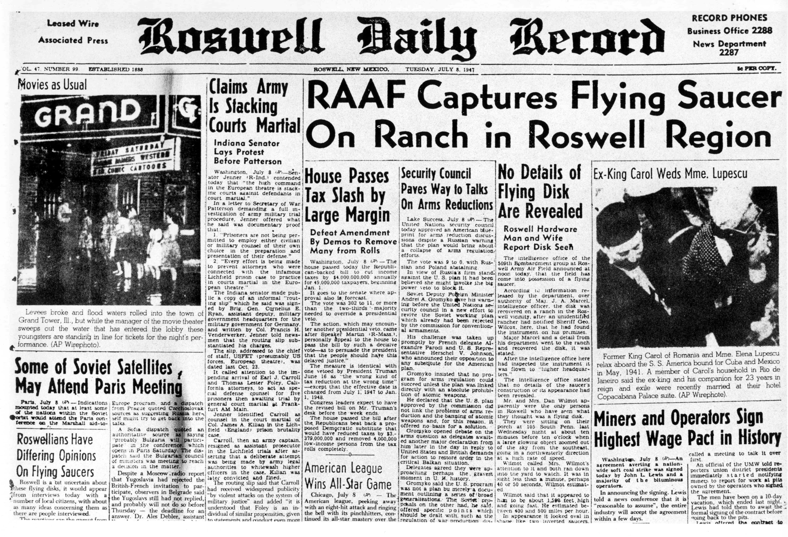
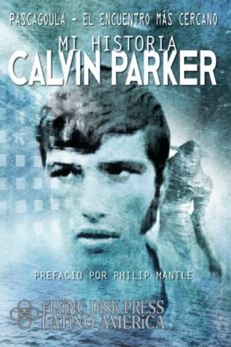
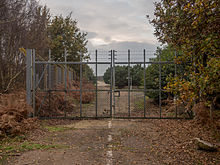
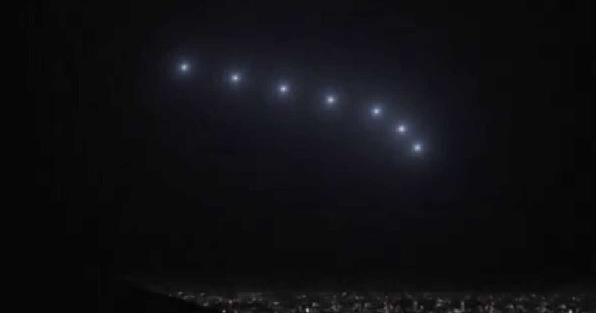

Investigación Ovni


Los informes sobre OVNIs se remontan a varios siglos atrás, pero el fenómeno comenzó a ganar notoriedad a nivel mundial en la era moderna, particularmente después de la Segunda Guerra Mundial. Aquí se destacan algunos momentos clave:
| Avistamientos | |||
|---|---|---|---|
| Nombre | Descripcion | Fecha | Imagen |
| Incidente de Roswell |
El Incidente de Roswell en Nuevo México es uno de los casos más icónicos. Inicialmente, el ejército de EE. UU. emitió un comunicado afirmando que había recuperado un "disco volador", pero luego retractó la declaración y dijo que era un globo meteorológico. Este incidente ha generado teorías de conspiración sobre un posible encubrimiento. |
1947 |  |
| Encuentros cercanos de la tercera clase en Pascagoula |
Charles Hickson y Calvin Parker afirmaron haber sido secuestrados por seres extraterrestres en Pascagoula, Misisipi. Sus relatos detallados y la falta de explicación convencional generaron una gran atención mediática y escrutinio público. |
1973 |  |
| Avistamientos en la Base Aérea de Bentwaters-Rendlesham |
En el Reino Unido, varios militares en la Base Aérea de Bentwaters-Rendlesham informaron haber visto luces extrañas y un objeto desconocido en el bosque cerca de la base. Este incidente es uno de los casos más conocidos en Europa y se considera uno de los encuentros cercanos más notorios. |
1980 |  |
| Avistamiento de Phoenix Lights |
Miles de personas en Arizona reportaron haber visto una formación en V de luces brillantes en el cielo nocturno. El evento fue ampliamente presenciado y fotografiado, aunque el gobierno militar inicialmente afirmó que eran bengalas. |
1997 |  |
| Ovni de Tikal, Guatemala |
En un video capturado durante un viaje aéreo en las ruinas mayas de Tikal, se observa un objeto no identificado moviéndose en el cielo. El video se volvió viral y generó debate sobre su autenticidad. |
2012 | |